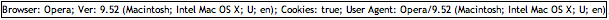

Introduction to User JavaScript
Introduction
User JavaScript is an Opera feature allowing you to apply custom JavaScript to any pages you surf, giving you extra control over how sites are presented or loaded. There are many different reasons for you to apply custom JavaScript to web pages, including:
- Preventing certain scripts from running: you could write a User JavaScript to stop advertisement popups.
- Fixing broken sites: Sometimes pages do not render correctly, and you could use User JavaScript to fix broken behavior on these sites.
- Introducing extra scripts to the site or browser: you could load a script to check what kind of user agent your browser is spoofing.
In this article I will show you how to enable User JavaScript, how to configure Opera to run scripts only on certain domains, and how to create and use a simple example.
Note that there are a lot more User JavaScript resources available at userjs.org, including lots of free scripts.
Enabling User JavaScript
The first thing to do is to check if User JavaScript is enabled in your installation of Opera. To do this, type “opera:about ” in the address bar and press return. If User JavaScript is enabled, the “User JavaScript files” path will be shown in the “Paths” section. If it is not, you can enable User JavaScript (and create a folder for your scripts to reside in) by selecting the following:
- On Mac, select “Opera > Preferences” from the menus, then select the “Advanced” tab, and click on the “Content” option from the list of the left-hand side. Now click the “JavaScript options” button, and enter a path to where you want to store your User JavaScript files in the “User JavaScript files” input field. OK out of all the dialog boxes and check “opera:about ” again—you should see your “User JavaScript files” path in the “Paths” section.
- On Windows and Linux, the instructions are exactly the same, except that the “Preferences” option is found under the “Tools” menu, not the “Opera” menu.
Creating and executing custom scripts
Now you have User JavaScript enabled, it is time to look at how to actually use it. Bear in mind that all your User JavaScripts can sit in a single or multiple script files inside the folder you specified above. When a page is loaded into Opera and you have User JavaScript enabled, the script is automatically imported into and run against the page. You need to specify when different parts of the script are executed using event listeners, and which sites they are run against (if you only want certain parts to run against certain domains) using domain detection. Let’s look at both of these subjects now.
Event Listeners
An event listener is used to specify exactly when a function should be executed, in the course of the page being loaded. The basic event listener syntax is as follows:
document.addEventListener('event', 'function', false);The arguments are:
event: This is what event should trigger the running of the function.function: This is the name of your function.false: This is actually a boolean, which can have the valuetrueorfalse. This states whether the event handler should be executed in the capturing or the bubbling phase. If you’re not certain what these mean, and which one you should use, stick to a value offalse(bubbling).
The two most common events that you’ll want to fire functions against are load, which fires the function after the whole page has finished loading, and DOMContentLoaded, which specifies to run the function after the DOM has loaded with. There are other event stages to run functions against too—learn about these at the opera.com tutorials.
Domain Detection
By default, User JavaScript will be executed against all pages you visit in Opera. You will often find however that you want to execute certain functions only against specific domains—this can be done using domain detection.
There are a couple of ways to perform domain detection. The first one is to compare a string using location.hostname.indexOf in an if statement, like so:
if (location.hostname.indexOf('opera.com') != -1)
{
...do stuff...
}
If the string “opera.com” appears in the URL, a match is detected, and the code inside the braces is run. This detects domains such as the following:
www.opera.com/dir/subdir/ www.subdomain.opera.com
However it will also detect this:
www.anythingbeforeopera.comA more precise method of domain detection is to use a comparison involving location.hostname to match just the domain you want (eg below it is opera.com):
if( location.hostname == 'opera.com' )
{
...do stuff...
}Example
This section will show both the above techniques in action, as well as teaching you how to create and run a simple User JavaScript. The example you will build is a User JavaScript that creates a bar at the bottom of the browser displaying the browser name, version, cookies and user agent. The basic logic flow of the script is thus:
- The script loads only if the user is accessing the www.opera.com web site.
- The function is fired when the page has completely finished loading—this is triggered by an event listener that listens for the
loadevent. - A
divelement is created usingdocument.createElement—this element will act as the container for the tool bar. - In the
divelement, child nodes are created using DOM calls. These nodes will load JavaScript'snavigatorobject to find out properties such as user agent, browser name, browser version and cookies.
To make use of this User JavaScript, simply copy and paste the code below into a plain text editor, and save it with a suitable name with a .js extension.
if( location.hostname == 'www.opera.com' )
{
document.addEventListener (
'load',
function (e)
{
if( !document.body ) {
return;
}
var mydiv = document.createElement('div');
mydiv.style.position = 'fixed';
mydiv.style.bottom = '0px';
mydiv.style.border = '1px solid #000';
mydiv.style.backgroundColor = '#fff';
mydiv.style.color = '#000';
mydiv.appendChild(document.createTextNode("Browser: " + navigator.appName))
mydiv.appendChild(document.createTextNode("; Ver: " + navigator.appVersion))
mydiv.appendChild(document.createTextNode("; Cookies: " + navigator.cookieEnabled))
mydiv.appendChild(document.createTextNode("; User Agent: " + navigator.userAgent))
document.body.appendChild(mydiv);
},
false
);
}When you have done this, try it out by navigating to www.opera.com—you should see a browser information bar at the bottom of the web page, as seen in Figure 1.
Figure 1: The browser information bar in action.
Summary
This article introduces User JavaScript and what it can do. Employing User JavaScript, you can employ greater control over web pages, fixing erronous behavior and improving your personal user experience. For more details, check out the Opera documentation on User JavaScript.
Zi Bin Cheah

Web Evangelist in the Developer Relations Team at Opera Software ASA.
This article is licensed under a Creative Commons Attribution, Non Commercial - Share Alike 2.5 license.
Comments
The forum archive of this article is still available on My Opera.
No new comments accepted.